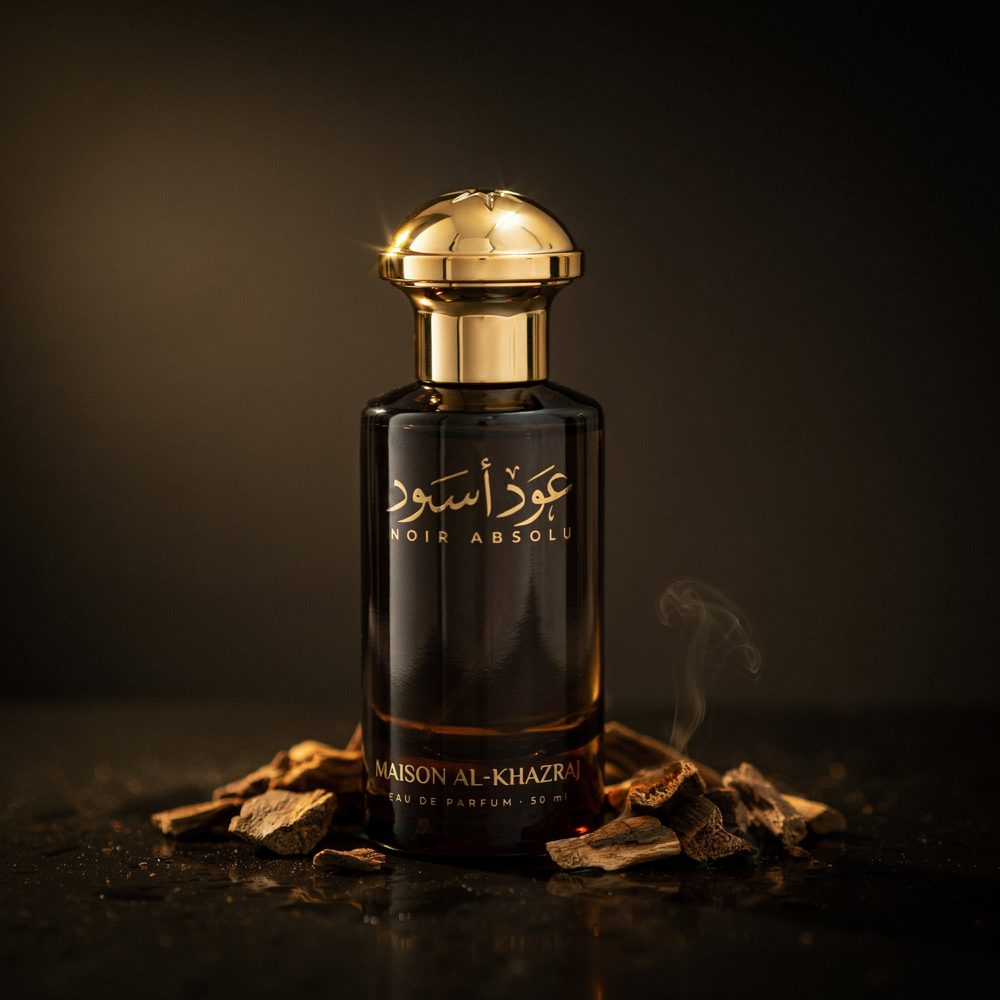
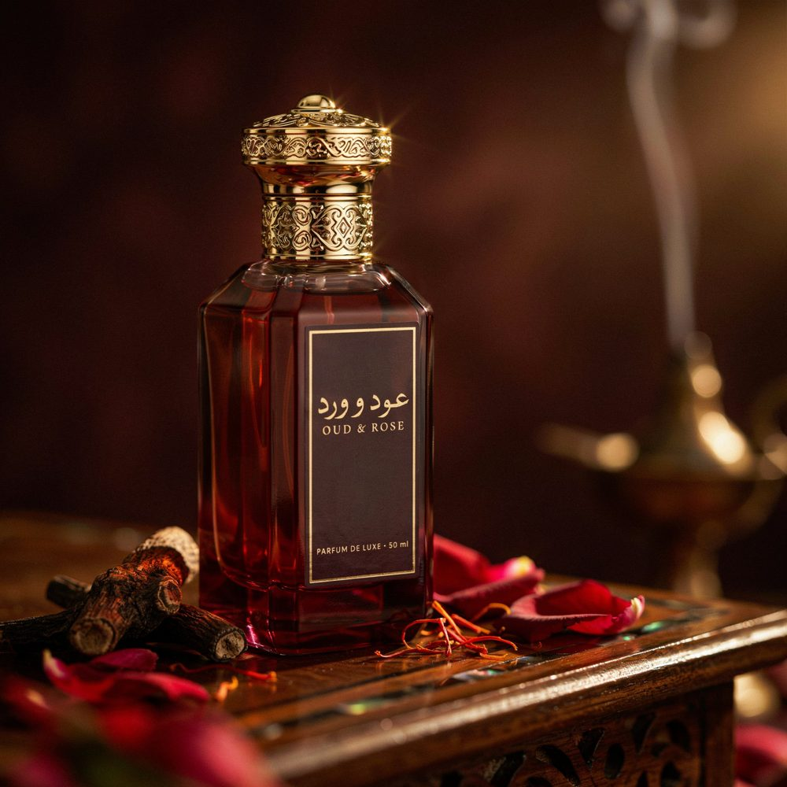
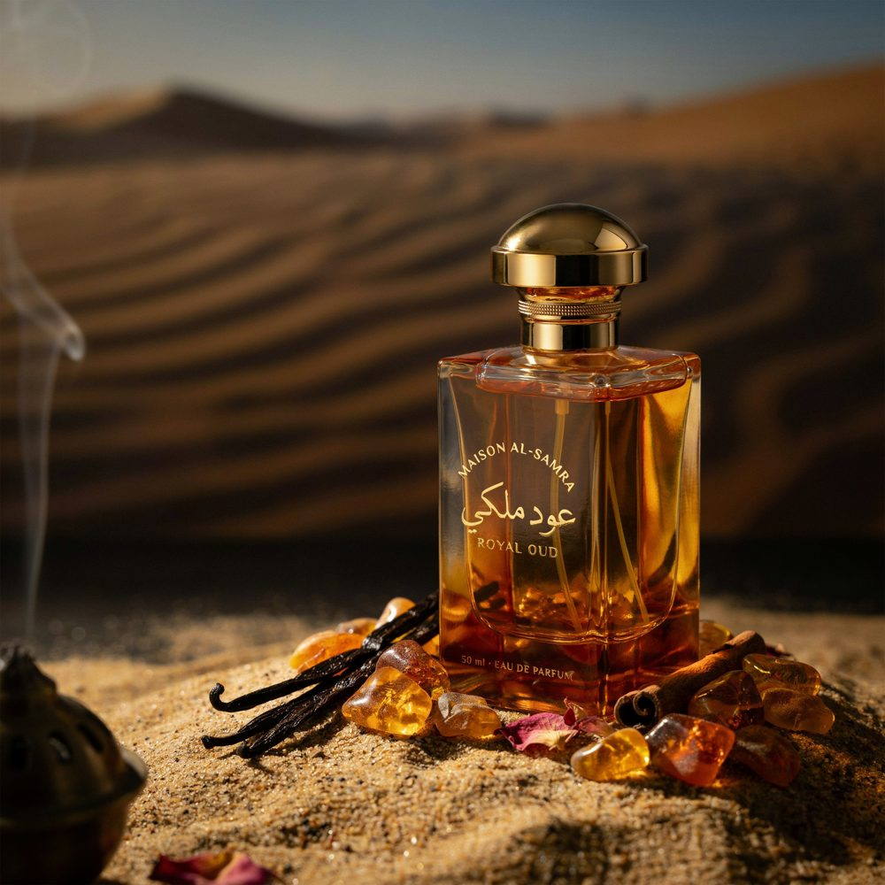
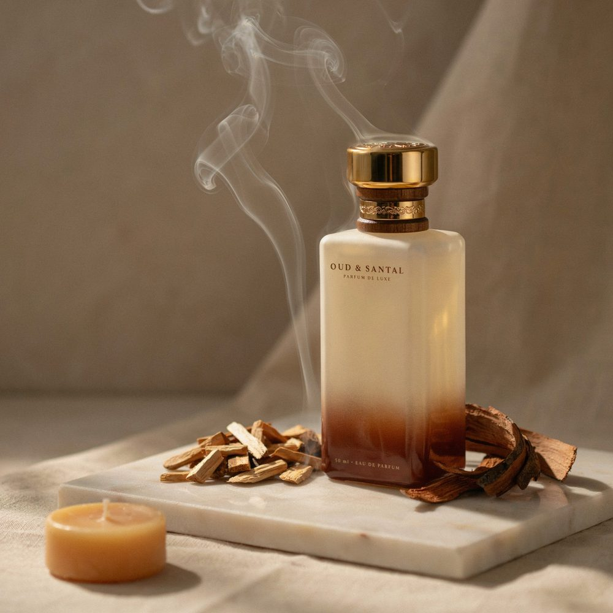

01

Oud Noir
Une obscurité dorée. Le bois sacré rencontre la fumée de l'encens dans une nuit sans fin. Profond, mystérieux, inoubliable.
Bois sacré
Encens
Musc sombre
Collection
Explorez l'univers visuel de Maison Oud — flacons, matières premières et inspirations orientales.
Nos senteurs

Une obscurité dorée. Le bois sacré rencontre la fumée de l'encens dans une nuit sans fin. Profond, mystérieux, inoubliable.

La rose de Damas enlaçant le oud comme une étreinte au lever du soleil. Floral et boisé, doux et ardent à la fois.

L'ambre chaud comme les dunes au crépuscule. Une chaleur enveloppante qui s'attarde sur la peau des heures durant.

Deux bois nobles, deux âmes sœurs. Le santal de Mysore apporte sa douceur crémeuse au oud intense dans une harmonie parfaite. Une fragrance de méditation et de plénitude absolue.
Notes olfactives
Chaque fragrance Maison Oud est construite autour d'une pyramide olfactive soigneusement élaborée par nos maîtres parfumeurs.
Des matières premières sélectionnées aux quatre coins du monde, pour une signature unique et intemporelle.
Bergamote, Poivre rose, Cardamome, Safran
Rose de Damas, Oud précieux, Encens, Patchouli
Musc blanc, Ambre, Santal, Vétiver doré
Origines
Le bois d'oud — ou agarwood — provient de l'Aquilaria, un arbre rare présent en Asie du Sud-Est et dans la péninsule arabique.
Lorsque l'arbre est infecté par un champignon particulier, il produit une résine sombre et précieuse. Cette résine, distillée, donne naissance à l'une des matières olfactives les plus rares et précieuses au monde.
Chez Maison Oud, chaque flacon est le fruit de ce savoir-faire ancestral, perpétué avec respect et passion.
Commander